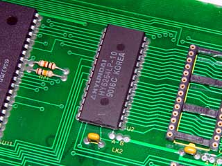
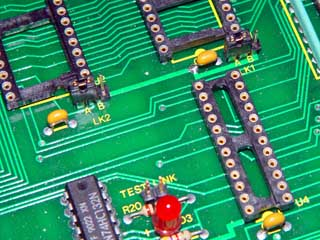
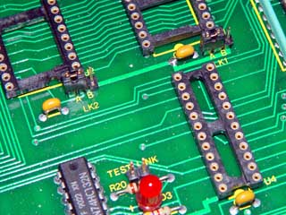

![[Return to top]](../../epc.png) 68008 Dartboard control pcb. By Lee Davison.
68008 Dartboard control pcb. By Lee Davison.
Back
68008 Dartboard control pcb. By Lee Davison.
Back
Once the board has been prepared there are some modifications that can be made to make the board a little more usefull.Expanding the RAM.
As supplied the board comes with 8k of onboard RAM. This can be replaced with a 32k chip by removing the original chip and replacing it with a socket.


The safest way to remove the RAM is to cut each leg away from the chip, using thin nosed cutters, then desolder each pin in turn cleaning out the holes as you go. However the holes in the board are reasonably large and the chip can be removed intact with a solder sucker and some care.Once the chip is removed it's place is filled with a turned pin socket.
 

To enable larger RAM chips to work the LK2 B trace must be cut and the A trace made. This can be done with a wire link or, after the B trace has been cut, a three pin jumper block can be fitted. This is what I chose to do and allows either 8k or 32k RAM chips to be used.At the same time I chose to replace LK1 similarly (cutting trace A first) which allows the use of 32k, as well as 64k, EPROMS and also fit a jumper to the test link.
Note If the board is used with the smaller capacity devices then the image of each device will echo through the address range of the larger device.
E.g. A 64K EPROM is located at $00000 to $0FFFF, a 32 K EPROM is located at $00000 to $07FFF and again at $08000 to $0FFFF.
![[e-mail]](../../eml_sm.png)